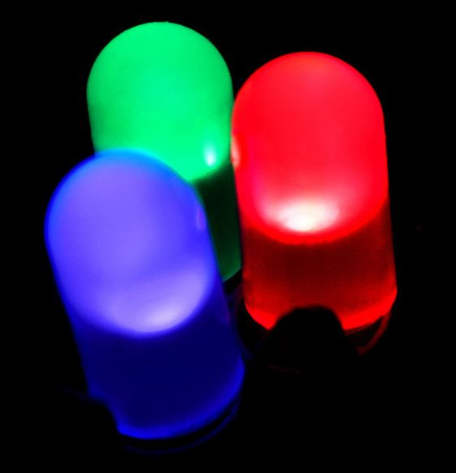

1.6.2. Светодиоды
Светодиод или светоизлучающий диод (LED — Light-emitting diode) — полупроводниковый прибор с одним электронно-дырочным переходом, в котором происходит преобразование электрической энергии в энергию светового излучения. Прибор предназначен для использования в устройствах визуального представления информации. Излучаемый свет лежит в узком диапазоне спектра, его спектральные характеристики зависят в том числе от химического состава использованных в нём полупроводников.
 При пропускании электрического тока через p-n-переход светодиода в прямом направлении, носители заряда – электроны и дырки – рекомбинируют с излучением света (фотонов) по причине перехода электронов с одного энергетического уровня на другой.
Основные параметры светоизлучающих диодов: сила света, в мкд (милликандела), яркость, в кд/м2 (кандела на кв.метр). Остальные параметры — как в обычных диодах. [См. видеоролик]
Первое известное сообщение об излучении света твёрдотельным диодом было сделано в 1907 году британским экспериментатором Генри Раундом из Маркони Лабс. В 1961 году Роберт Байард и Гари Питтман из компании Texas Instruments открыли и запатентовали технологию инфракрасного светодиода.Первый в мире практически применимый светодиод, работающий в световом (красном) диапазоне, разработал профессор Иллинойского университета (США) Ник Холоньяк в компании General Electric в 1962 году. Холоньяк, таким образом, считается «отцом современного светодиода». Его бывший студент, Джордж Крафорд, изобрёл первый в мире жёлтый светодиод и улучшил яркость красных и красно-оранжевых светодиодов в 10 раз в 1972 году.
В 1976 году Т.Пирсол создал первый в мире высокоэффективный светодиод высокой яркости для телекоммуникационных применений, изобретя полупроводниковые материалы, специально адаптированные к передачам через оптические волокна.
Компания «Монсанто» была первой, организовавшей массовое производство светодиодов, работающих в диапазоне видимого света и применимых в индикаторах. Компании «Хьюллет-Паккард» удалось использовать светодиоды в своих ранних массовых карманных калькуляторах.
Обозначение светодиода на электрических схемах →
Рис. 6.1. Конструкции светодиодов.
Обычные светодиоды изготавливаются из различных неорганических полупроводниковых материалов, например: Арсенид галлия (GaAs), Алюминия галлия арсенид (AlGaAs), Галлия арсенид-фосфид (GaAsP), Алюминия-галлия-индия фосфид (AlGaInP), Индия-галлия нитрид (InGaN) и т.д.
Органические светодиоды — OLED
Многослойные тонкоплёночные структуры, изготовленные из органических соединений, которые эффективно излучают свет при пропускании через них электрического тока. Основное применение OLED находит при создании устройств отображения информации (дисплеев). Предполагается, что производство таких дисплеев будет гораздо дешевле, чем жидкокристаллических. Главная проблема для OLED — время непрерывной работы, которое должно быть не меньше 15 тыс. часов. Одна из проблем, которая в настоящее время препятствует широкому распространению этой технологии, состоит в том, что «красный» OLED и «зелёный» OLED могут непрерывно работать на десятки тысяч часов дольше, чем «синий» OLED. Это визуально искажает изображение, причём время качественного показа неприемлемо для коммерчески жизнеспособного устройства. Хотя сегодня «синий» OLED все-таки добрался до отметки в 17,5 тыс. часов непрерывной работы. Дисплеи из органических светодиодов применяются в последних моделях сотовых телефонов, GPS-навигаторах, для создания приборов ночного видения.
По сравнению с другими электрическими источниками света (преобразователями электроэнергии в электромагнитное излучение видимого диапазона), светодиоды имеют следующие отличия и преимущества:
- Высокая световая отдача. Современные светодиоды немного уступают по этому параметру только натриевым газоразрядным лампам и металлогалогенным лампам.
- Высокая механическая прочность, вибростойкость (отсутствие нити накаливания и иных чувствительных составляющих).
- Длительный срок службы.
- Спектр современных люминофорных диодов аналогичен спектру люминесцентных ламп, которые давно используются в быту. Схожесть спектра обусловлена тем, что в этих светодиодах также используется люминофор, преобразующий ультрафиолетовое или синее излучение в видимое с хорошим спектром.
- Малая инерционность.
- Количество циклов включения-выключения не оказывают существенного влияния на срок службы светодиодов (в отличие от традиционных источников света – ламп накаливания, газоразрядных ламп).
- Малый угол излучения. Это может быть как достоинством, так и недостатком.
- Низкая стоимость индикаторных светодиодов, но высокая стоимость при использовании в освещении.
- Безопасность – не требуются высокие напряжения.
- Нечувствительность к низким и очень низким температурам. Однако, высокие температуры противопоказаны светодиоду, как и любым полупроводникам.
- Отсутствие ртути, в отличие от люминесцентных ламп.
Применение светодиодов
OLED монитор
Светодиодная лампа в комнатном освещении
В светофорах